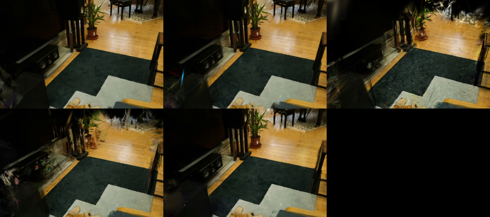
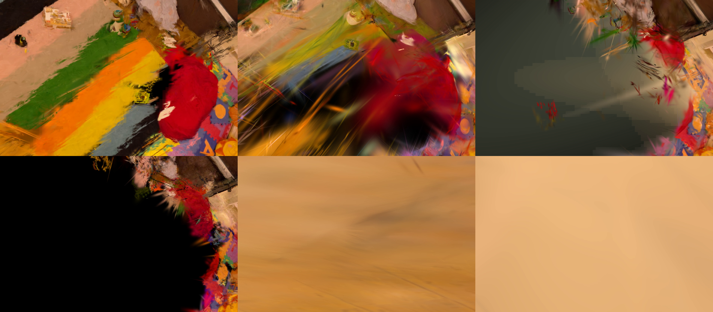
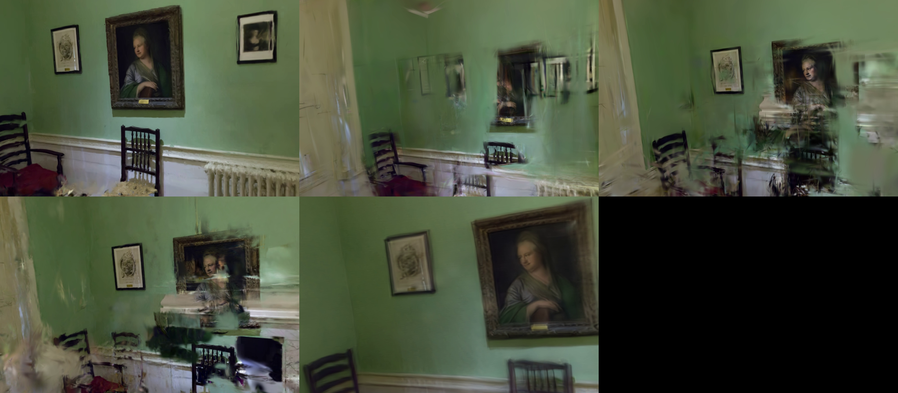
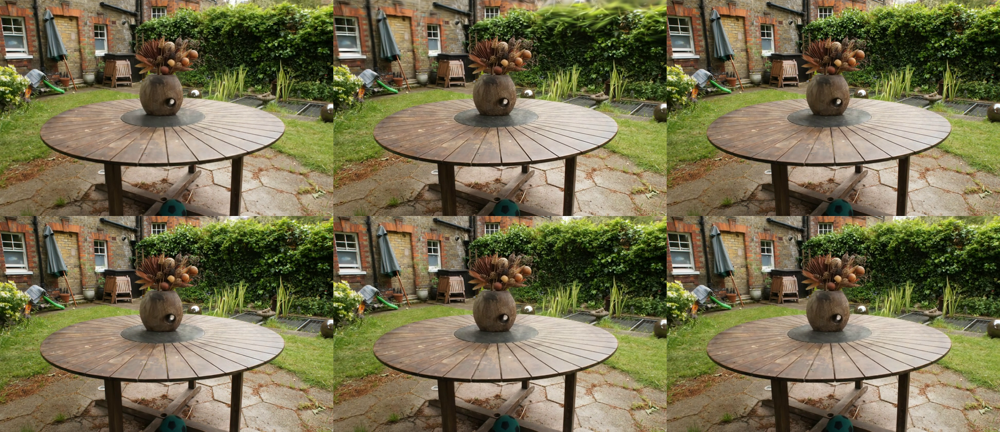
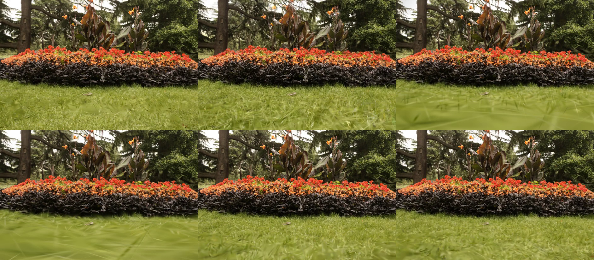
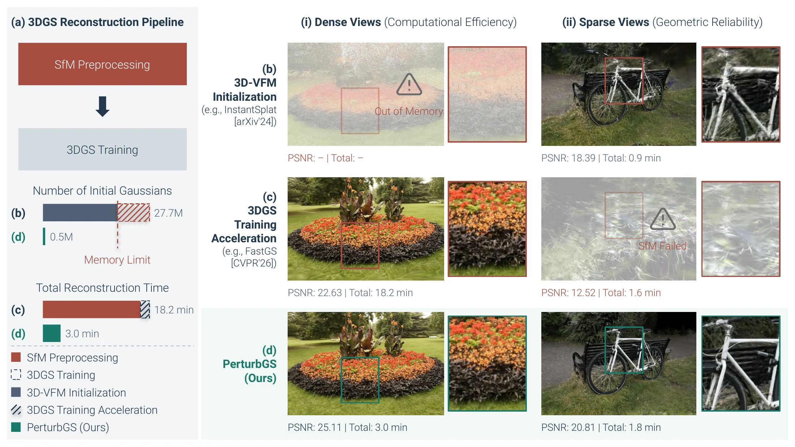
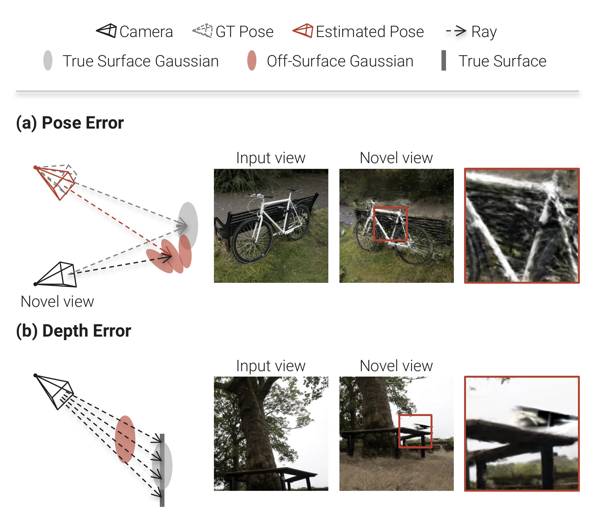
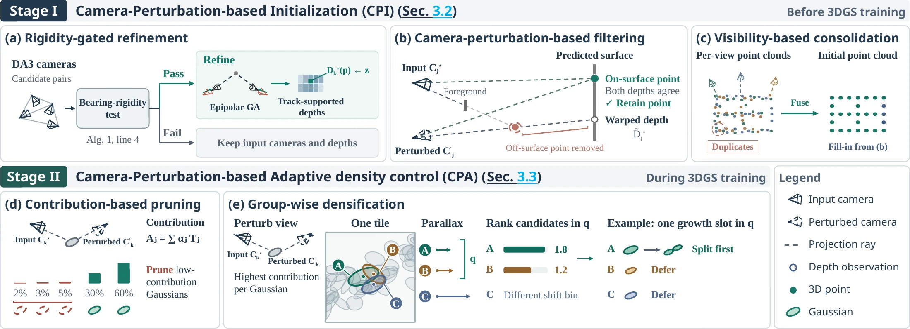
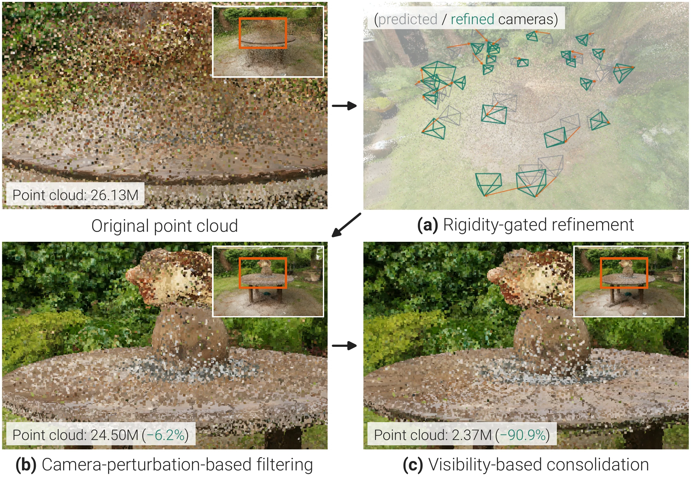

PerturbGS is a view-count-agnostic framework for fast and scalable 3D Gaussian Splatting reconstruction from sparse or dense sets of unposed views. It uses camera perturbations to resolve geometric ambiguity before and during 3DGS training.
How camera perturbations guide reconstruction
Compare 3D-VFM initialization and 3DGS training acceleration. Follow CPI before 3DGS training and CPA during 3DGS training. Compare a held-out view of Kitchen reconstructed from 12 input views, then inspect the toy wheels in Supplementary Fig. 8. At 192 views, the clock shows mean reconstruction time over nine scenes alongside renderings of Flowers.
Abstract
Fast and scalable 3D Gaussian Splatting (3DGS) reconstruction from unposed input views requires both computational efficiency and geometric reliability. With dense views, Structure-from-Motion (SfM) preprocessing dominates the total reconstruction time, and initializing Gaussians from the pixel-wise predictions of a 3D vision foundation model (3D-VFM) can exhaust GPU memory. With sparse views, wide baselines can cause SfM registration to fail, and pose and depth errors in the predictions of the 3D-VFM can introduce artifacts in novel views. We propose PerturbGS, a view-count-agnostic framework for fast and scalable 3DGS reconstruction from both dense and sparse views. Our key insight is to use camera perturbations to expose geometric ambiguity before and during 3DGS training. Before 3DGS training, our Camera-Perturbation-based Initialization (CPI) identifies depth-inconsistent point clouds through camera perturbations and removes them along with duplicate point clouds, yielding a compact initialization for 3DGS training. During 3DGS training, our Camera-Perturbation-based Adaptive density control (CPA) prunes Gaussians with low rendering contribution across input and perturbed views. Through camera perturbations, our CPA also groups Gaussians and densifies them group-wise, which limits the redundant growth of Gaussians. Our PerturbGS reconstructs 3D scenes from dense views where previous methods exhaust GPU memory and produces sharper novel views with reduced artifacts from sparse views.
Key contributions
View-count-agnostic reconstruction
PerturbGS uses the same camera-perturbation framework to reconstruct scenes from sparse to dense sets of unposed views. It reconstructs every evaluated scene on Mip-NeRF 360 and Deep Blending with 12 to 192 input views.
Camera-Perturbation-based Initialization (CPI)
CPI tests camera rigidity, removes depth-inconsistent points, and fuses repeated observations into a compact initial cloud.
Camera-Perturbation-based Adaptive density control (CPA)
CPA prunes Gaussians with low rendering contribution and gives candidates with similar projected displacements a shared growth budget.
Mip-NeRF 360 and Deep Blending · Main paper, Table 2
Reconstruction from 12 to 192 input views
Each comparison opens with the mean reconstruction times from Table 2, then plays the same 10-second camera path for both methods. Switch baselines at any frame.
Reconstruction clock0:00
PerturbGS (Ours)
Clocks show the mean total reconstruction time for the selected dataset and view count (Table 2).





Method
Before and during 3DGS training
Start with camera poses and depths predicted by DA3. CPI turns these predictions into the initial point cloud. CPA then prunes, splits, and clones Gaussians during 3DGS training.
Select a region of the figure or its description to enlarge it and follow the steps.

Main paper · Fig. 1 · Dense inputs stress memory and preprocessing time. Sparse inputs stress geometric reliability.

Main paper · Fig. 2 · An erroneous pose or depth can agree with the input image while producing artifacts in a novel view.

Main paper · Fig. 3 · CPI builds the point cloud before 3DGS training. CPA controls the Gaussian population during 3DGS training.

Main paper · Fig. 4 · The paper’s point-cloud example progresses from 26.13M input points to 24.50M after filtering and 2.37M after consolidation.
Parallax in PerturbGS
Main paper · Fig. 2(b) · Fig. 3(b) · Algorithm 1
Move the camera from the input view to the perturbed view. Watch the depth map as CPI checks the two points and filters the point in front of the surface.
Camera and scene
Top view · fixed field of view
Point-cloud depth
Input view
Surface pointOff-surface point
Main paper · Fig. 3(e) · Fig. 7(b)
Follow Gaussian A from its input view to its densification group. Within the same input view and tile, Gaussians with similar projected shifts share a densification budget. The method groups shifts by their whole-pixel part.
Contribution by input view
Which Gaussians match A?
Gaussian
View
Tile
Projected shift
Group
Results
Reconstruction across view counts
On Mip-NeRF 360, PerturbGS reconstructs the scene in 1.8 minutes on average with 12 input views and 3.0 minutes with 192. Times include preprocessing and training on one NVIDIA RTX 5090.
Method
PSNR ↑
SSIM ↑
LPIPS ↓
Time (min) ↓
Rows (e)–(h) are the SfM-free methods ranked in Table 2. Bold marks the best quality score and underline the second best. OOM indicates an out-of-memory error. A fraction beside a method gives the number of scored scenes out of the dataset total.